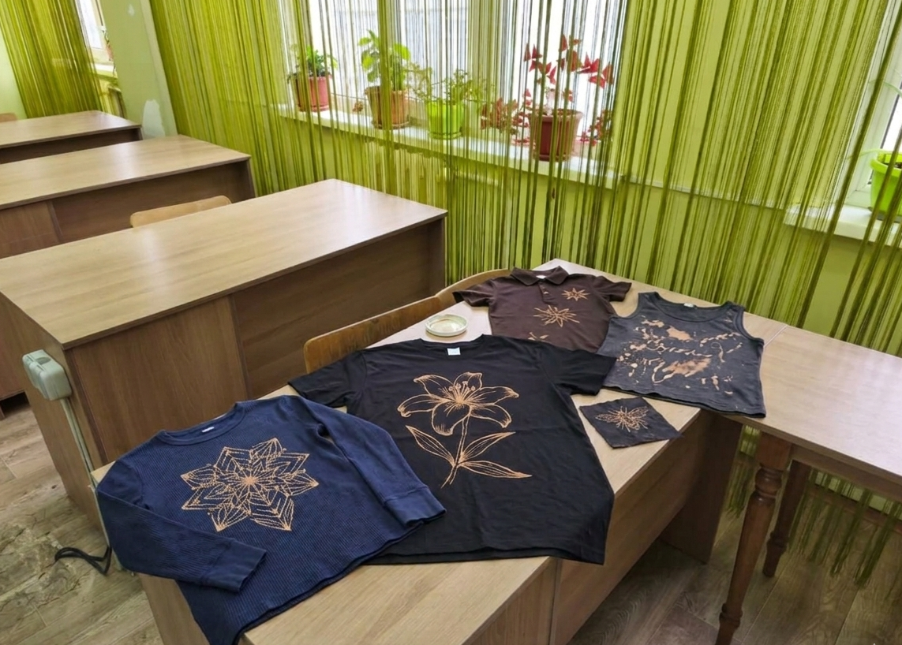
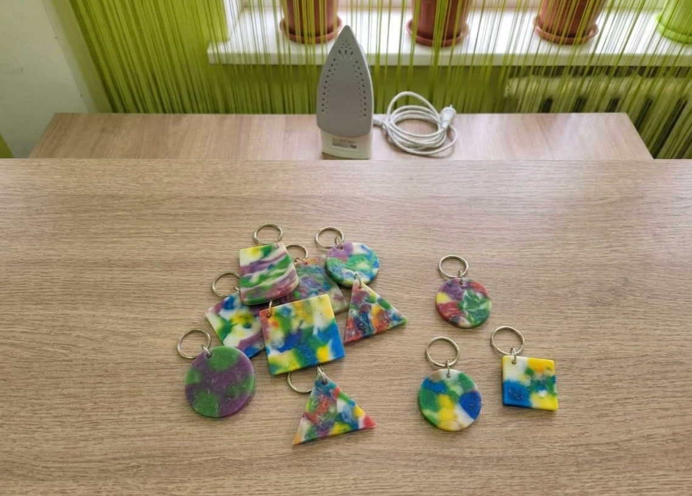
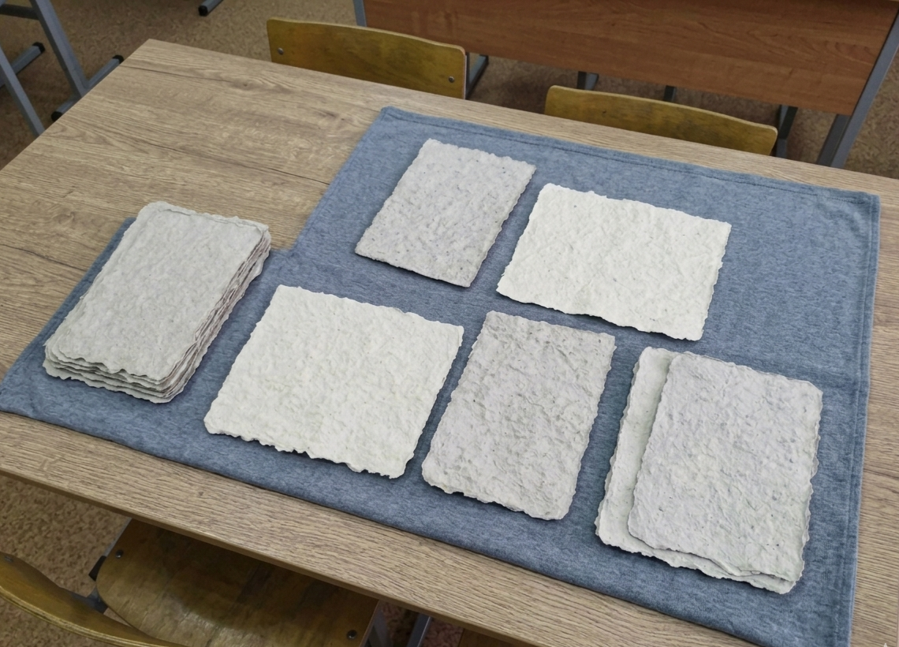
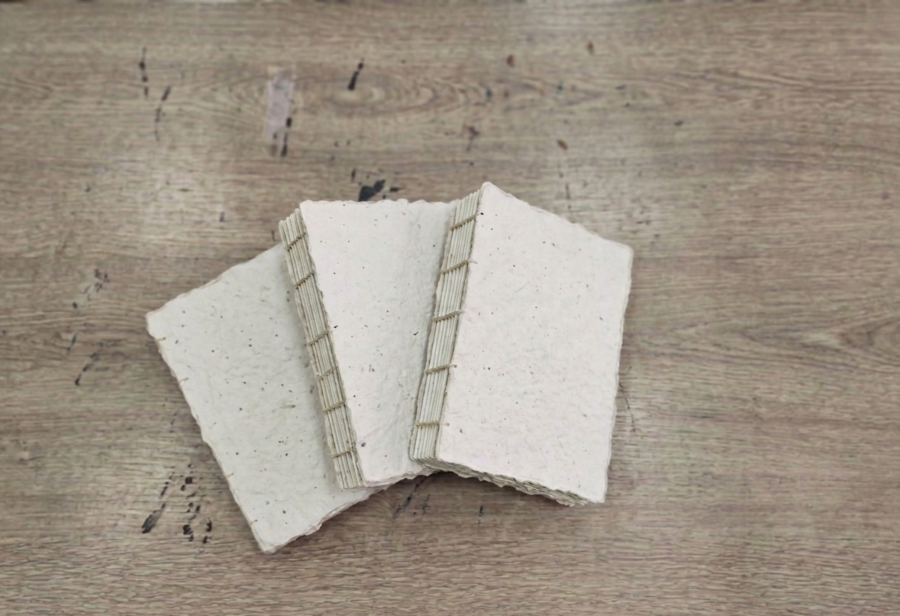

Привет! Меня зовут Кених Елизавета, я ученица 11 класса ОШ №85 и Министр экологии нашей
школы. Мой подход к экологии — это не просто разовые акции, а создание работающих систем.
Фундаментом для Re-Cycle Hub стал мой опыт участия в республиканском
конкурсе TURAQTY JOL 6.0 от Федерации клубов ЮНЕСКО. Защищая там свой предыдущий проект, я
поняла главное: устойчивое развитие невозможно без четких алгоритмов.
Сегодня я использую этот опыт, чтобы превратить нашу школу в инновационную площадку. Я сама
спроектировала этот сайт и разработала Telegram-бота на Python, чтобы автоматизировать
работу наших лабораторий. Моя цель как Министра — оставить школе не просто проект, а готовую
IT-экосистему, где каждый ресурс получает второй шанс, а каждый ученик становится инженером
будущего.
Как работает Re-Cycle Hub?
Наш проект — это умная цепочка превращений, где каждый этап прозрачен и важен. Все начинается с
Системы Сбора (Eco-Drop): в ключевых точках школы установлены боксы, куда ученики сдают сырье. Но мы
не просто собираем мусор — мы его оцифровываем.
Через Telegram-бота каждая заявка проходит модерацию, превращаясь в баллы (XP) для мейкера. После
этого отсортированные ресурсы попадают в наши Лаборатории. Здесь «отходы» перестают быть таковыми,
превращаясь в ценный материал для инженерного и художественного творчества. Мы создали среду, где
технология сбора встречается с магией созидания.
Наши Лаборатории
Digital Heart: Интеллектуальная экосистема управления
Telegram-бот «Re-Cycle Assistant» — это программное ядро проекта, разработанное на языке Python. Он выполняет роль связующего звена между физическими лабораториями и цифровым учетом, обеспечивая полную прозрачность и автоматизацию всех процессов.
1. Автоматизированный контроль безопасности
Безопасность — наш безусловный приоритет. Бот выступает в роли «цифрового инспектора»:
- Допуск к работе в Plastic, Paper или Textile Lab невозможен без прохождения специализированного тестирования по ТБ.
- Система анализирует ответы в реальном времени. Только после 100% успешного прохождения квиза пользователю открывается доступ к записи на мастер-классы конкретной зоны.
- Все сертификаты и статусы безопасности хранятся в базе данных и привязаны к ID пользователя.
2. Цифровая верификация ресурсов (Eco-Drop)
Мы превратили хаотичный сбор мусора в контролируемую логистическую систему:
- Каждая единица сданного сырья проходит через модуль модерации. Ученик отправляет данные (тип материала, вес, фото) через интерфейс бота.
- Каждая заявка проверяется администратором проекта. Это исключает накрутку баллов и гарантирует, что в лаборатории попадает только качественное, чистое сырье.
- История вкладов каждого участника сохраняется, формируя глобальную статистику экологического следа школы.
3. Система грейдов и мотивации
Проект использует современные механики удержания (retention) и развития сообщества:
- За каждое действие (сдача сырья, прохождение ТБ, создание изделия) пользователь получает XP (очки опыта).
- Система предусматривает рост от Junior-мейкера (новичка) до Senior-коуча (наставника, имеющего право проводить мастер-классы).

Наши результаты в цифрах
Собрано ресурсов
Количество вторичного сырья (пластик 02, макулатура, текстиль), которое успешно прошло верификацию через систему Eco-Drop и было направлено на переработку в лаборатории.
Допуски по безопасности
Ученики ОШ №85, которые успешно прошли интерактивные квизы в Telegram-боте, подтвердили знание техники безопасности и получили «Цифровой допуск» к работе с оборудованием.
Готовых изделий
Авторские продукты (дизайнерские шопперы, скетчбуки из «живой» бумаги, брелоки из переплавленного пластика), созданные мейкерами в ходе воркшопов и коучингов.
Цифровой след
Суммарное количество обработанных команд, транзакций опыта (XP) и записей на мастер-классы внутри Telegram-бота "Re-Cycle Assistant".
Галерея работ









